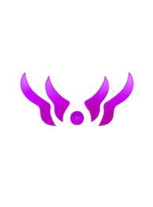
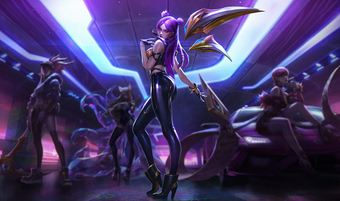
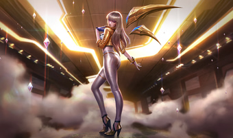
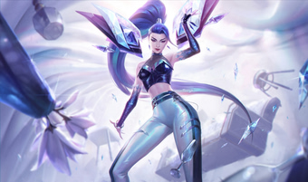
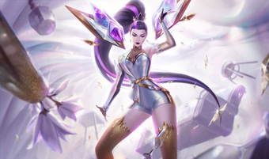
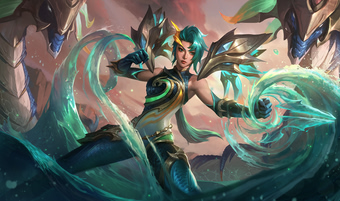
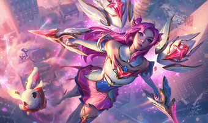

Passiva: Segunda Pele
Os ataques de Kai'Sa aplicam Plasma, causando dano mágico adicional crescente. Após 4 acúmulos, o Plasma explode para causar dano com base na Vida perdida do alvo.

Kaisa Kondamari era apenas uma criança comum que vivia em um vilarejo pacato em Icathia, até o dia em que
o chão se abriu. Tragada para as profundezas por uma fenda do Vazio, ela viu tudo o que conhecia ser
consumido pela escuridão absoluta. Enquanto outros teriam sucumbido ao medo ou à fome das criaturas
abissais, a vontade de viver de Kai'Sa provou ser sua arma mais forte.
Nas profundezas, ela encontrou uma criatura do Vazio e, em um ato de desespero e instinto, permitiu que
o ser se fixasse em sua pele. O que deveria ser uma infecção mortal tornou-se uma segunda pele viva.
Essa carapaça biotecnológica não apenas a protege da atmosfera corrosiva do abismo, mas também concede a
ela o poder de disparar mísseis de energia e mover-se com velocidade sobre-humana.
Anos depois, Kai'Sa emergiu das sombras como uma caçadora sem igual. Ela não é mais a menina assustada
que caiu no buraco, mas sim uma guerreira que caminha na linha tênue entre a humanidade e o monstro.
Para o povo de Runeterra, ela é uma figura aterrorizante, muitas vezes confundida com as próprias
abominações que ela caça.
"Eles me chamam de monstro. Mas eu sou a única coisa que separa este mundo do que está por vir."
Hoje, Kai'Sa luta uma guerra solitária. Ela protege aqueles que a temem, caçando incansavelmente os
predadores do Vazio para impedir que o resto do mundo sofra o mesmo destino que seu vilarejo. Ela é a
Filha do Vazio, a prova viva de que, mesmo na escuridão mais profunda, a luz da resiliência humana pode
brilhar.
Os ataques de Kai'Sa aplicam Plasma, causando dano mágico adicional crescente. Após 4 acúmulos, o Plasma explode para causar dano com base na Vida perdida do alvo.

Kai'Sa dispara uma salva de 6 mísseis. Com a evolução, dispara 12 mísseis.

Dispara um feixe de longa distância. Com a evolução, aplica 3 acúmulos e reduz o cooldown caso acerte um campeão inimigo.

Ganha Velocidade de Movimento e Ataque. Com a evolução, concede invisibilidade.

Avança rapidamente para perto de um alvo marcado e ganha um escudo.









